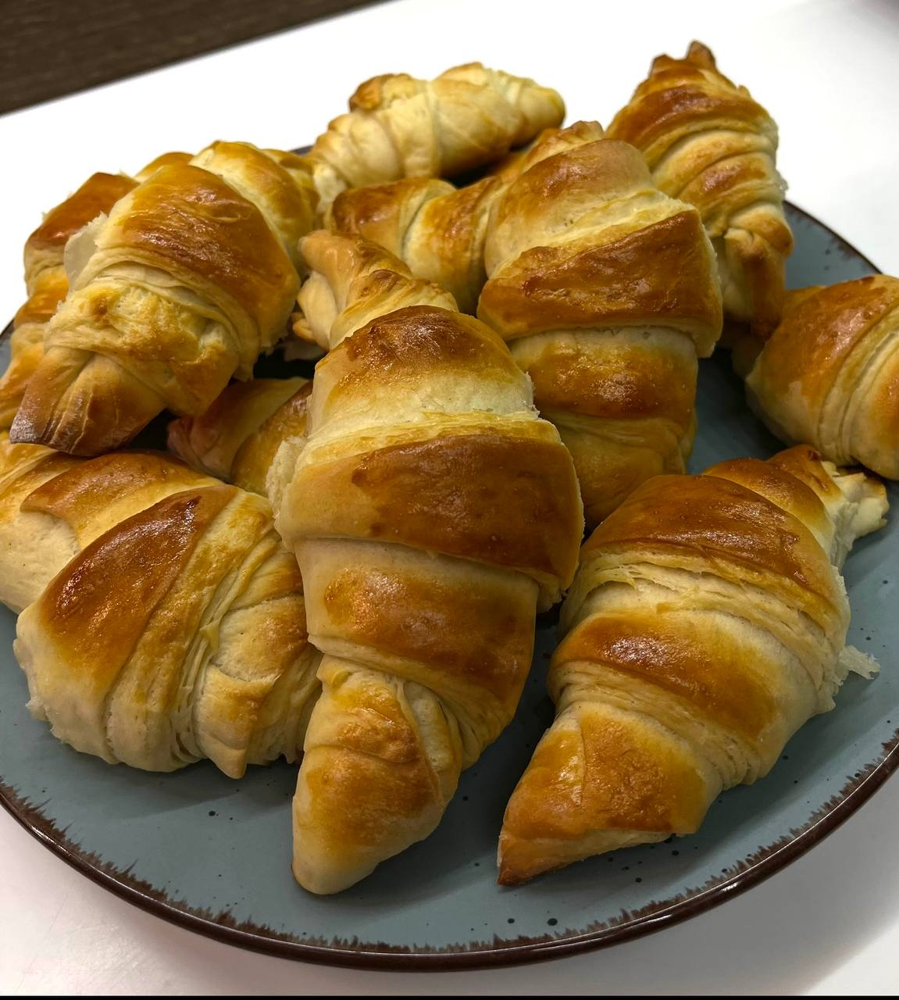

У мене є чимало захоплень.Не знаю чому, але мені шалено подобається проводити час на кухні. Я ніколи не вчилася готувати. Я просто дивилася, як готують бабуся і мама і дуже хотіла їм допомогти. Пізніше я вирішила почати готувати самостійно. Я відчувала себе цілком впевнено і трохи дивно. Я раптом зрозуміла, скільки рецептів і сімейних секретів я знаю. Я можу приготувати практично все: омлет, млинці, картопля, курку, супи і навіть десерти. Особливо я люблю готувати тортики. Ви можете собі уявити, скільки всього існує десертів? Тірамісу, чізкейк, шоколадний тане торт, крем-брюле, яблучний пиріг і багато інших смакоти. Моя сім’я пробувала ці десерти в ресторанах і кафе, а я потім шукала рецепти в Інтернеті. Думаю, що моя любов до готування і стала причиною, по якій друзі люблять бувати у мене вдома. Тут завжди є щось солодке і смачне.
